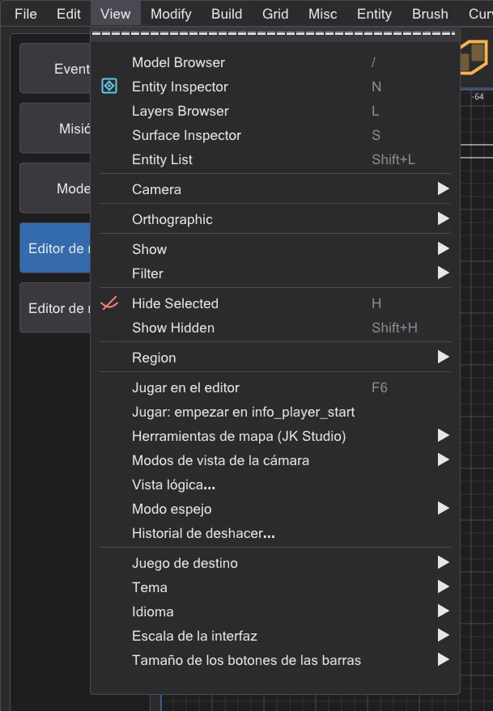
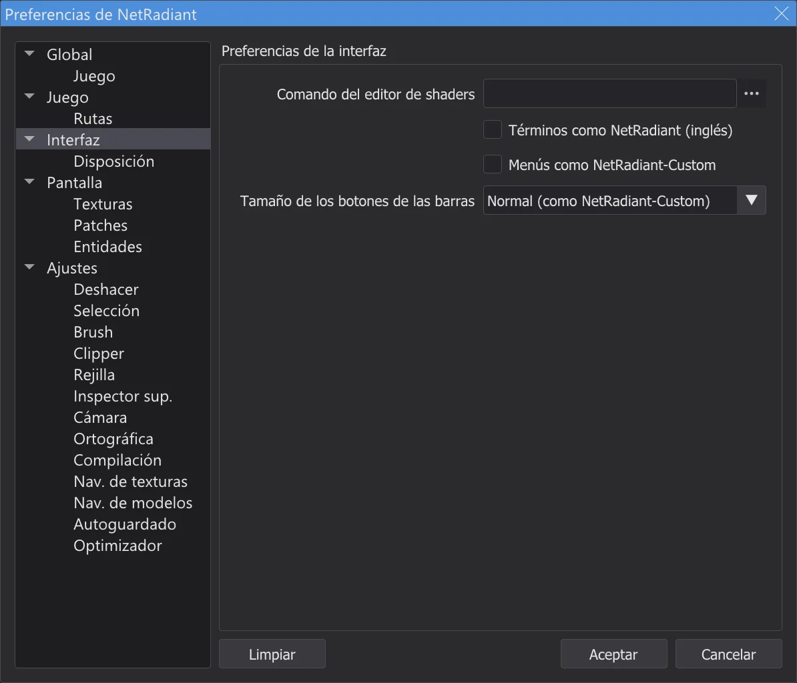
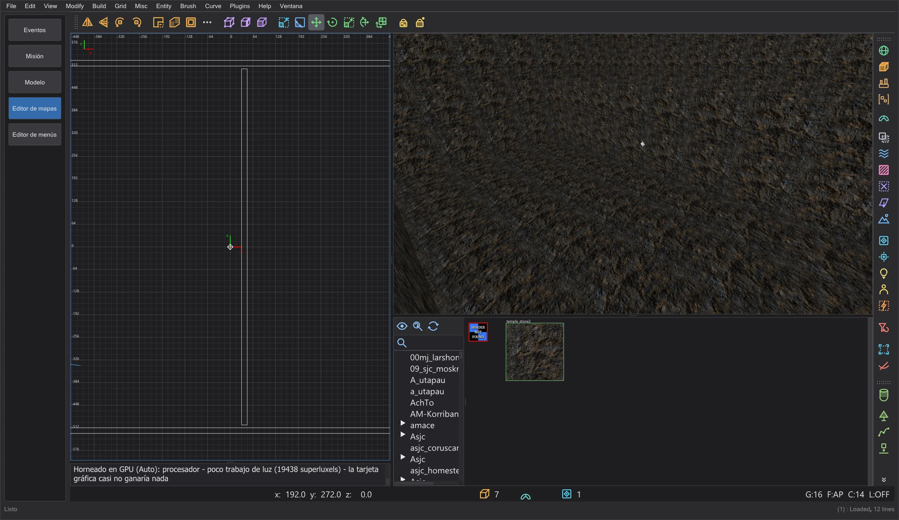

Mapa y escena
Editor de mapas: diferencias con NetRadiant-Custom
El editor de mapas sigue a NetRadiant-Custom 20260114 en aspecto y manejo. Los errores conocidos de NetRadiant-Custom, Xonotic NetRadiant, GtkRadiant y q3map2 se comprobaron uno a uno: qué hace JK Studio de otra manera, y qué se queda a propósito como en NetRadiant-Custom.
Manejo propio (no está en NetRadiant-Custom)#
- Menús con el estilo de JK Studio. La barra de menús y todos los menús del editor de mapas se ven como los menús del resto del programa. Las entradas, el orden, los submenús, las marcas, los atajos, las teclas mnemónicas y lo que hace cada entrada son los de NetRadiant-Custom. Preferences > Interfaz > Menús como NetRadiant-Custom recupera el aspecto de NetRadiant-Custom.
- Ajustes del programa en View. Al final de View: Juego de destino, Tema, Idioma, Escala de la interfaz y Tamaño de los botones de las barras, con el mismo efecto que en el menú Ver del programa. El idioma, el tema y la escala también siguen al final de Misc.
- Tamaño de los botones de las barras. Pequeño, Normal (como NetRadiant-Custom) o Grande para las barras principal, de filtros y de plugins, en Preferences > Interfaz y en View > Tamaño de los botones de las barras. Se aplica enseguida y se guarda; las vistas suben o bajan con las barras.
- Ctrl + rueda del ratón no escala el programa dentro del editor de mapas: como en NetRadiant-Custom, la rueda pertenece a las vistas (zoom en 2D, moverse en la cámara, desplazarse en el navegador de texturas), también con Ctrl. La escala está en View > Escala de la interfaz.
- Título de la ventana. En el editor de mapas el título muestra el mapa y un
*cuando tiene cambios sin guardar, como en NetRadiant-Custom. - Funciones de compilación propias. La ventana Progreso de la compilación con el tiempo restante, Compilación parcial: reutilizar VIS y Compilación parcial: reutilizar la luz, Añadir al mapa compilado (Editor de mapas: progreso de la compilación y compilaciones parciales), Conservar datos del editor, Recuperar misc_model a partir de la geometría y Estimar luces (experimental) (Conservar los datos del editor), cada una con su propia entrada de menú u opción y la indicación "no está en NetRadiant-Custom". bhed_q3map2 tiene para ellas las opciones
-bhedvisreuse,-bhedlightcachey-bhedmodels; sin ellas compila como antes. - Herramientas propias del editor (etapa 8b). Ventanas divididas libres para la disposición dividida, Jugar en el editor (F6), Vista lógica, Modos de vista de la cámara, Modo espejo y Historial de deshacer (Editor de mapas: terreno, jugar, lógica, espejo y más), cada una con su propia entrada de menú u opción y la indicación "no está en NetRadiant-Custom", todas desactivadas por defecto. El Terrain Generator viene del código fuente de NetRadiant-Custom posterior a la versión 20260114; su semilla fija es un añadido propio. Recuperar misc_model a partir de la geometría busca en todas las carpetas de modelos con un índice de modelos en caché. bhed_q3map2
-light -bhedgpuejecuta las pruebas de sombra en la tarjeta gráfica con resultados idénticos byte a byte, pero sigue desactivado (sin ganancia en el ordenador medido).






Editor: errores corregidos#
| Informe | NetRadiant-Custom | JK Studio |
|---|---|---|
| NRC#65 | Tras salir del modo vértices o aristas, los componentes siguen seleccionados; el siguiente arrastre deforma el brush. | Salir del modo vértices o aristas deselecciona sus componentes. |
| NRC#302, GL#206 | Las tapas de bisel y de bisel invertido pueden crear dos patches degenerados, según la orientación del patch. | La dirección de la tapa se elige por tamaño y forma, así cada tapa tiene superficie. |
| NRC#130 | Una ruta con diéresis u otros caracteres no ASCII: el mapa no se abre y los ajustes se dañan. | El editor y bhed_q3map2 manejan cualquier ruta (p. ej. C:\Users\Jörg\...). |
| NRC#164 | Guardar con una ruta del motor relativa (../../Academy/) dispara una aserción. | Las rutas se vuelven absolutas al fijarlas. |
| NRC#213 | AutoCaulk falla con "reading ..._ac.caulk failure" sin motivo. | La consola muestra la salida de q3map2 y el motivo. |
| NRC#145 | Con los shaders de Jedi Academy, AutoCaulk pone el system/nodraw no sólido en brushes sólidos y usa watercaulk, que allí no existe. | Los nombres de system.shader en Jedi Academy y Jedi Outcast: nodraw_solid, caulk_water, caulk_lava, caulk_acid; un shader que le falta al juego se deja fuera. AutoCaulk ejecuta q3map2 con el juego del editor (-game ja/jk2). |
| NRC#261 | El inspector de superficies muestra los desplazamientos brush-primitive no normalizados de otros editores como el límite del selector (8192); una flecha o Intro mueve entonces la textura. | Fuera del rango del selector, el valor se muestra reducido en mosaicos enteros (misma alineación); el .map no cambia hasta que se fija un valor. |
| NRC#279 | Las tapas solo funcionan con ciertos tamaños de patch; la consola lo dice solo en inglés. | Mismo límite (intencionado); bajo la línea en inglés, una indicación en el idioma del programa nombra el tamaño que necesita cada tapa. |
| NRC master | Errores de texto corregidos tras la etiqueta 20260114 (bobToolz Door Builder "East - West", "Distance Multiplier"). | Adoptado. |
Encontrado durante la comprobación
- Elegir una textura en el navegador de texturas ahora la fija de verdad como shader de los brushes nuevos (nunca se guardaba).
- El estado de la ventana de etiquetas se guardaba dos veces y se perdía; el botón Limpiar de las preferencias no tenía función.
- Se comprobó el efecto de cada entrada de menú, botón, tecla y campo, y cada comando que cambia el mapa deshace y rehace byte a byte.
bhed_q3map2: errores corregidos y diferencias deliberadas en la salida#
| Informe | NetRadiant-Custom | JK Studio |
|---|---|---|
| Probador (etapa 7) | -convert (File > Abrir .bsp) escribe como detalle los brushes hint, areaportal y skip de los mapas de Jedi Academy, Jedi Outcast y SoF2: en estos juegos "structural" no tiene marca de contenido, así que la comprobación de brushes transparentes estructurales nunca se aplica. | Las marcas de compilación de los shaders deciden como al compilar (q3map_structural / surfaceparm structural): esos brushes vuelven como estructurales, como en el mapa fuente. |
| GL#173 | No determinista: cada compilación escribe un .bsp distinto (punteros de shader como claves de orden, coordenadas de lightmap sin inicializar, carreras entre hilos en -vis y -light); los nombres de los shaders de estilo generados cambian en cada compilación. | Las etapas BSP y de luz dan siempre el mismo resultado para el mismo mapa, con cualquier número de hilos igual a una compilación de 1 hilo; con un hilo, -light queda idéntico byte a byte a NRC. La etapa vis es como en NRC: igual con un hilo; con varios hilos su resultado puede diferir un poco de una compilación a otra. |
| NRC#101 | El dirtmapping (-dirty) oscurece las caras junto al cielo como si el cielo fuera una pared. | Un rayo de suciedad que sale del mapa por el cielo no oscurece. |
| NRC#102, GL#154 | Un nombre de mapa con punto (test.q3, foo_0.1) dado sin .map pierde la parte tras el punto. | Solo se sustituyen las extensiones propias de q3map2 (el editor siempre pasa rutas completas de todos modos). |
| PR #316 | Errores de memoria: una cara de brush sin plano lee mapplanes[-1]; una referencia de deluxel sin deluxemap. | Corregido (comprobado con AddressSanitizer y UBSan sobre los mapas de regresión y todos los mapas descompilados de los tres juegos); la salida no cambia. |
| PR #316 | Las partes finas de brush de menos de una unidad cúbica se descartan; una cara de cruce más estrecha de 0,2 unidades desaparece; las caras casi sobre el plano de otra cara no se dibujan; los brushes de sección pequeña no se dividen, así que parte de ellos no tiene colisión. | Se adoptan las cinco correcciones del pull request correspondiente, cada una comprobada por separado con los mapas originales de Jedi Academy y Jedi Outcast: ningún mapa empeoró. Se deja fuera: descartar portales solo cuando son degenerados; con ello 42 de 106 mapas originales tienen fugas (huecos estrechos que NetRadiant-Custom cierra). |
| ASan, UBSan | Cuelgues o comportamiento indefinido con archivos de mapa rotos (ninguna entidad, unas comillas como último carácter, números enormes) y al subdividir patches para los lightmaps. | Encontrados ejecutando bhed_q3map2 con AddressSanitizer y UBSan sobre 300 mapas rotos a propósito y los mapas originales; corregidos. Un mapa sin entidades da ahora un error claro. La salida de los mapas válidos queda idéntica byte a byte. |
| Decimal | (editor) Los números a partir de aproximadamente 1e10 se cortan al guardar un mapa; 1e20 se convierte en 1. | El valor se conserva (encontrado con el nuevo fuzzer de archivos de mapa rotos); las coordenadas normales se escriben exactamente como antes. |
Por eso un .bsp compilado por bhed_q3map2 difiere de uno compilado por el q3map2 de NetRadiant-Custom en el orden de las superficies y el empaquetado de los lightmaps, no en la geometría. El propio q3map2 de NetRadiant-Custom nunca escribe dos veces el mismo archivo.
Vista previa como en el juego#
| Informe | NetRadiant-Custom | JK Studio |
|---|---|---|
| OpenJK#1358 | (motor) Un misc_model_static cuyo punto de descarte origin + (0 0 zoffset+1) está dentro de un sólido nunca se dibuja. | La vista previa "como en el juego" tampoco lo muestra, y el optimizador ofrece el zoffset que lo recupera (Editor de mapas: optimizador y límites). |
| JKHub | (juego) Estilos de luz: tras editar entidades, las luces conmutables (con targetname) encienden y apagan las luces equivocadas; -onlyents numera los estilos de nuevo y los lightmaps conservan los antiguos. | Actualizar solo las entidades se niega cuando las luces conmutables difieren del .bsp original y pide una compilación completa (Editor de mapas: abrir y cambiar mapas terminados). |
Conservado como en NetRadiant-Custom#
- Cámara dentro de un brush (etapa 7): las caras traseras se descartan, así que un brush en el que estás desaparece, salvo que su shader diga
cull none,cull twosidedocull disable(volúmenes de niebla, cristal, agua); entonces sus paredes siguen visibles desde dentro, como en NetRadiant-Custom (renderstate.cpp OpenGLShader::construct, shaders.cppcull). - NRC#281: Ctrl+K a varios destinos les da el mismo targetname, como en NRC.
- NRC#132: una compilación de región tiene fugas cuando la región no tiene entidades y la cámara está dentro de un brush, como en NRC; JK Studio avisa antes de una compilación así.
- NRC#48: los lightmaps externos junto con estilos de luz no funcionan en RBSP (Jedi Academy, Jedi Outcast), un límite del formato; el menú de compilación y el optimizador rechazan la combinación y explican cómo evitarla.
- GL#189, NRC#144: las luces de superficie bajo un suelo lo atraviesan por el backsplash, como en NRC; el optimizador encuentra esas luces (Editor de mapas: optimizador y límites).